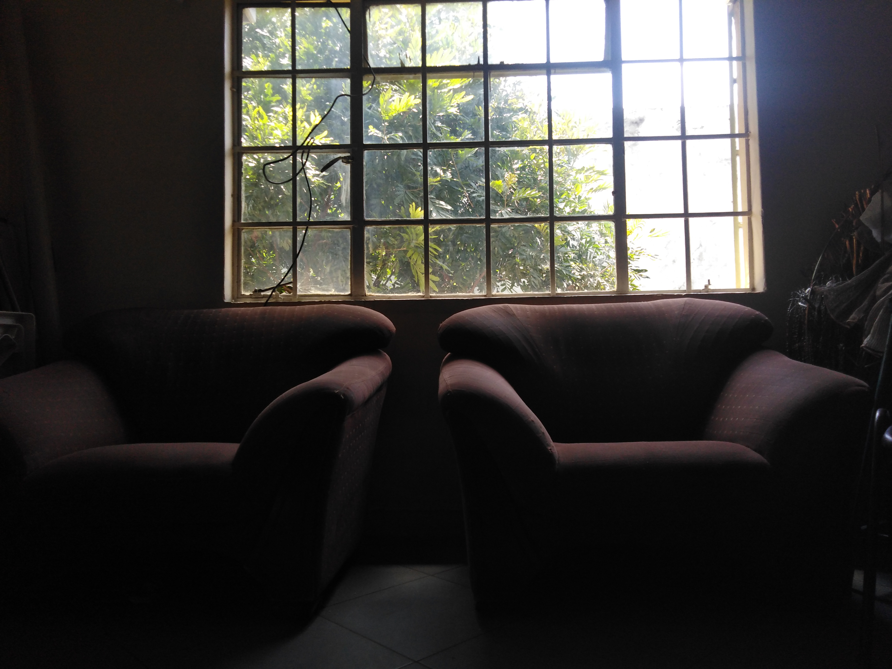

Editor
type heading here
which sermon are you typing
type some notes first

notebar buttons
smash to add a point smash to add a verse smash to add a quote smash to add a headingtoolbar buttons
smash to delete this sermon (if it already exists) smash to enter the sermon exhibition smash to save smash to save if the saving function doesnt work correctly smash to continue from where you left off last timeNotes preview
Notes